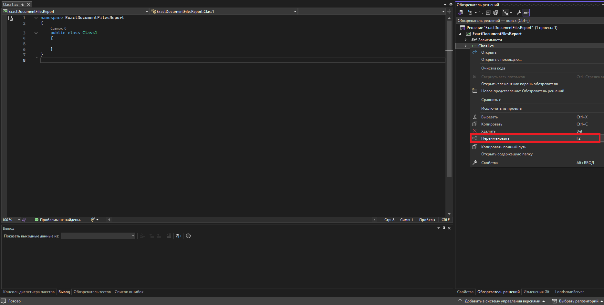
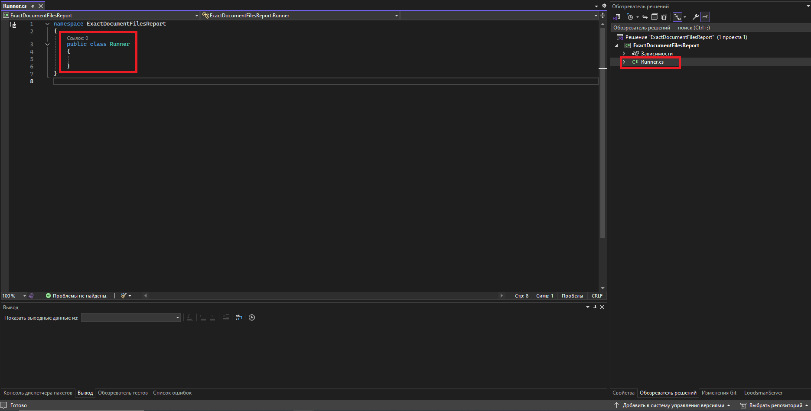
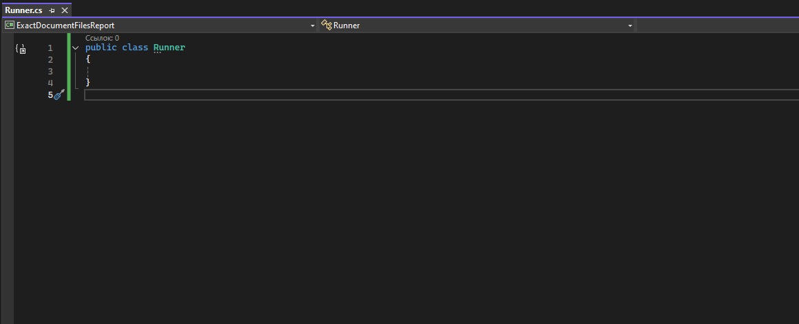
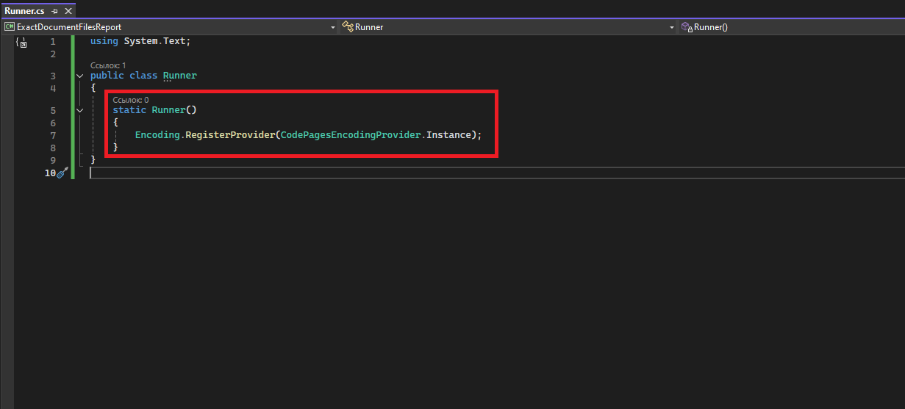
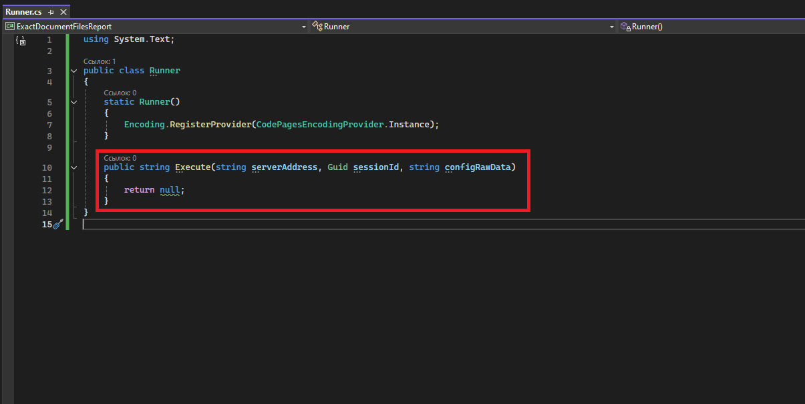

Точка входа в библиотеку классов
Точку входа в библиотеку классов можно сконфигурировать любым образом, но, по умолчанию она задается как:
Для обеспечения такого вызова создадим класс Runner с методом Execute, который и будет являться точкой входа в приложение.
Для этого достаточно переименовать автоматически созданный Class1.cs:


На скриншоте выше видно, что для класса Runner используется пространство имён ExactDocumentFilesReport. В таком случае, точка входа в библиотеку классов будет выглядеть как:
Чтобы использовать точку входа Runner.Execute, необходимо удалить пространство имён и привести файл Runner.cs к следующему виду:

Особенности использования ServerApi требуют явной регистрации провайдера Windows-специфичных кодировок
(https://learn.microsoft.com/ru-ru/dotnet/api/system.text.codepagesencodingprovider.instance?view=net-8.0)
Сделаем это в конструкторе класса - https://learn.microsoft.com/ru-ru/dotnet/csharp/programming-guide/classes-and-structs/constructors

В данном случае был добавлен статический конструктор (static), он идеально подходит под данную задачу, так как CLR гарантирует, что статический конструктор:
- выполнится один раз
- выполнится потокобезопасно
- другие потоки будут ждать завершения инициализации
Это удобный способ сделать глобальную инициализацию библиотеки без ручного вызова конструктора.
Далее добавим метод Execute с требуемой спецификацией:

Аргументы метода:
- serverAddress - адрес сервера приложений, например, http://localhost:8076
- sessionId - идентификатор сессии, например, 901a4b51-e8d4-457d-9fb1-06e6c27dcb93
- configRawData - сериализованные в JSON параметры, например:
{
"object_ids": [2904, 2, 3],
"params": {
"Глубина разузловки": "3",
"Название типа связи для отбора объектов": "Состоит из ...",
"Название типа связи для отбора документов": "Документы"
}
}
До момента полной реализации логики в точку входа можно поставить "заглушку"